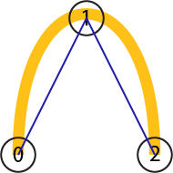
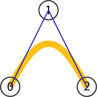
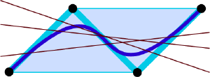

Page 14: Bézier Curves
There are two common types of approximating curves in computer graphics: Bézier curves and B-Splines. Both are splines - they make complex shapes out of a series of smaller segments, with each segment being a polynomial. Both are very general; they work for any degree of polynomial. Both have elegant mathematics behind them, and good methods. Bézier curves are more common in 2D, so we will focus on them. (B-Splines deserve their own workbook)
A note: the correct (French) spelling of Bézier has an accent over the first e. Leaving off the accent is acceptable because the curves are so common; the word “Bezier” has basically become an English word.
The YouTube Video The Beauty of Bezier Curves is a really nice introduction to Bézier curves. It is more focused than the longer video The Continuity of Splines. The video is a very nicely animated version of the same math in the workbook and my whiteboard derivations below. It goes on to explain arc length, and the methods for computing it (that we will get to later in the workbook). There is some overlap between the videos - but the redundant parts are important, so seeing them multiple times isn’t a problem.
Note: The correct spelling for the name of the key Bezier algorithms, and their inventor, is de Casteljau. I have been misspelling it for years. I am trying to clean up the misspellings.
The video for 2023 introduces Beziers:
Motivating Bézier Curves
Most discussions of Bézier curves dive into the math. Even the old version of this workbook introduced them by showing how they connected to Hermite cubics from previous pages.
Often, you are shown Bézier curves (either as math or just drawing with them). Then you are given a list of nice properties and expected to remember them.
To motivate Bézier, we will consider a single curve segment where we know the beginning and end points. Because we may have many points, we will refer to the first and last as and (we have points). We will interpolate these two points. This is a choice because it lets us connect things together.
1. Bézier curve segments interpolate their first and last points
What should the curve do between these two points? If we have no other information, a straight line is an obvious choice. In fact, a Bézier curve with just 2 points is the straight line between them.
The idea of Bézier curves is that we will add additional control points that influence what happens between and . With Bézier curves, we can add any number of control points.
2. Bézier curve segments can have any number () of control points
Note: each Bézier segment can have many control points, and we can have many segments to make up an overall curve.
Bézier curves are created so that each segment only depends on its control points, not the control points of other segments. The independence of segments gives them locality - although, sometimes Bézier curves are said to not have locality because the entire segment depends on all of its control points.
3. Bézier curve segments only depend on their control points
Let us start by adding a single point. We now have 3 points, so we can call them , , and .
What should we do with the “middle” control point that we added between the beginning and end? One possibility is to interpolate it - but this has the problem that it prevents us from getting a single smooth piece. We want each segment to be smooth.
4. Bézier curve segments are smooth (they are single polynomials)
If we make a smooth curve that interpolates, the curve has to go out of its way to approach the point smoothly. Think about interpolating the middle point:
{kind=link}

Instead of interpolating the interior control point, we will approximate it; it will influence the shape (the curve will go towards it, just not through it).
We want to keep the curve inside the triangle; this is useful because it gives us a clear way to keep the curve within a boundary. It will also be useful algorithmically, because we have bounds on where the curve can go.
{kind=link}

The inside of a triangle (or any convex polygon) is well-defined. In general, we need to consider the “convex hull” of the control polygon. Intuitively, the convex hull is the shape you get if you enclose the points with a convex shape. For a convex shape (like a triangle), it is just the polygon itself.
5. Bézier curve segments stay within the convex hull of their control points.
We can use the polygon to suggest how the curve should go. If we start at , we should expect to “go towards” . This tells us the direction of the tangent - a scaling factor will be determined to make all of the other properties work out. But the length of tangents doesn’t have a direct “user experience” meaning. The scaling factor works out to be (where is the number of points).
6. The tangent at the beginning of a Bézier curve segment is the vector from the first (beginning) point to the second point, scaled by .
Notice that this works out for line segments as well. The scaling factor is 1 for line segments. The Bezier curve is a line segment.
I could write all the rules for the beginning and end of the curve, but it would be nice if the curve were symmetric. Going backwards should be the same as going forward. If you reverse the order of the points, you should get the same curve (just in reverse order).
7. Bézier curves are symmetric. If you reverse the points, you get the same curve (with the parameter going the opposite way).
We have specified how things start and end, and where the curve must stay, but what else happens between?
We want the curve to be “relatively direct” based on the influence of the control points. We don’t want it making extra wiggles if it doesn’t have to. There shouldn’t be “extra” turns.
All of this is a bit hand-wavy - but it can be stated mathematically. Intuitively, the curve should turn as much as it needs to (since it does need to change direction), but have no “extra” changes in direction.
One way to think about it: if the curve has points, it has line segments connecting them; each line gives a direction the curve might go at some point; this means it must make changes in direction, but it doesn’t need to make any more. The curve has fewer wiggles than control points.
A mathematical way to describe this is variation diminishing. If you draw any line, the curve can only cross that line at most times. To see this, imagine the control polygon: it has segments, so any other line can only cross it that many times (since a line can cross each segment at most once). The curve has the same property.
The old lecture discusses this concept:
8. Bézier curves are variation diminishing. A segment has fewer wiggles than control points.
Here is a picture that shows the features for a Bézier segment with 4 points (it is a cubic):
{kind=link}

The four points (black dots) are connected by thick cyan lines to show the “control polyline”. The resulting cubic Bézier curve is dark blue.
Notice that the “convex hull” shape is the light blue parallelogram - the dark blue curve stays inside it. Also notice that any line we draw in the plane (I drew some dark red lines) can cross the polyline or the curve at most 3 (i.e., ) times.
And, one more feature that you might forget to ask for:
9. Bézier curves are affine invariant.
If you perform an affine transformation on a Bézier curve, you get a Bézier curve. More specifically, if you perform an affine transformation on the control points of a Bézier curve, you get the affine transformation of the curve itself. You only have to transform the control points (and draw the curve based on those new points): you do not need to compute all the points in the curve and transform them.
This property - that transforming the points is sufficient to transform the curve - is called affine invariance.
There are actually even more features of Bézier curves that make them extremely useful, which is why they are the most common form of curves in computer graphics. They are built into most APIs.
Bézier curves are very general. You can make them for any number of control points. In computer graphics, we generally use cubic (4 points) and quadratic (3 points) Bézier curves. We also use linear Bézier curves, but it’s easier to call these line segments. Almost always, we use these simpler pieces and create complex shapes by combining pieces.
There are applications of higher-order Bézier curves in design. For applications where smoothness is critical, designers might need very high levels of continuity. For example, boat designers and airfoil designers need to create curves with more than continuity, so they use higher-order Bézier curves.
And what makes Bézier curves even cooler is that you can get all these properties using curves that have very elegant mathematical derivations.
OK, What are Bézier Curves?
Before defining them mathematically, you should “feel” one - try it out and play with it.
You probably already have if you’ve used a drawing program (like Adobe Illustrator or Inkscape) or just about any graphics creation program; the curves are Bézier (probably cubics).
First, here’s a diagram with Bézier curves with 2, 3, 4 and 5 points. You can see how the parameter goes from 0 to 1 with the slider.
view - look at the box and experiment with it
examine - look at the code for the box
edit - change the box's content
rubric - several steps are suggested in the rubric page - form elements on page in rubric
03-14-01.html 03-14-01.js
Move the points around (you can drag the blue dots). Notice how the curves respond. They always interpolate the first and last points. The other points influence the shape of the curve, even though they are not interpolated. Notice how the curve stays in the convex hull, how it never gets too many wiggles, how its starting (ending) directions follow the first (last) line segments.
Don’t worry about looking at the programs ( 03-14-01.js and 03-14-01.html) - you’ll see how these things work soon enough.
On the next page, we will see how we can construct these curves geometrically.
Next: Page 15 - Geometric Approaches to Beziers